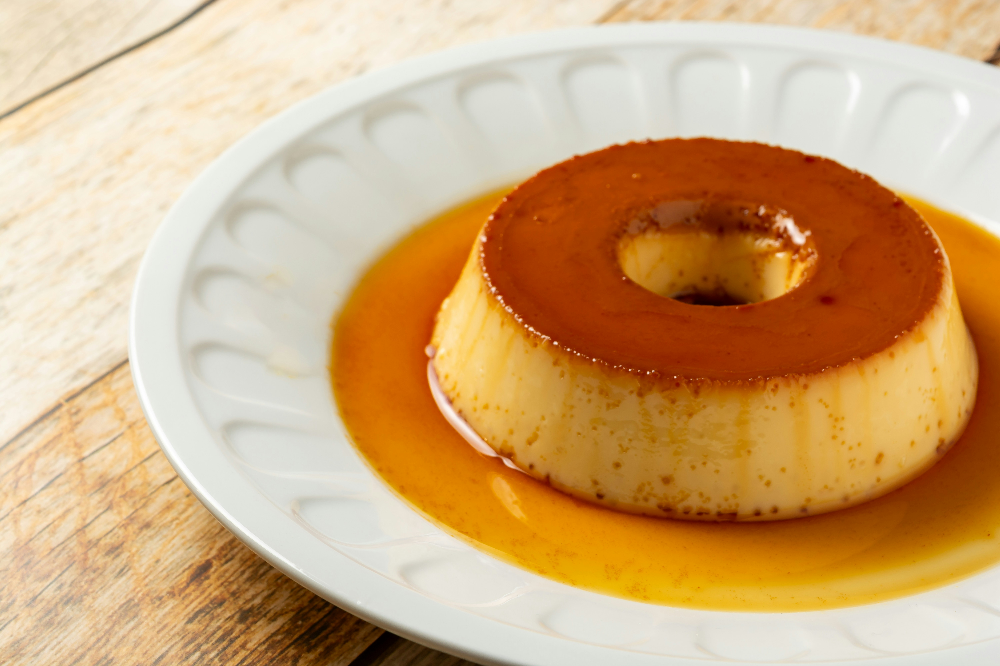

Description
Quick and tasty dessert for any occasion
Ingredients
- 4 eggs
- 500 ml of milk
- 0.25 cups of sugar
- 1 cinnamon stick
- 100 grams of sugar
- 50 ml of cold water
Steps
- Mix in a pot the 100 grams of sugar with the 50 ml of cold water
- Put the pot to low heat
- Mix in a bowl eggs, milk, 0.25 cups of sugar and cinnamon
- Softly stir without making bubbles
- Drop the caramel on a pudding bowl and then the previous mix
- Put the pudding bowl in the oven (previously heated to 180°C)
for 30-35 minutes or until the surface is golden.
- Take it out the oven and let it cool, then serve it